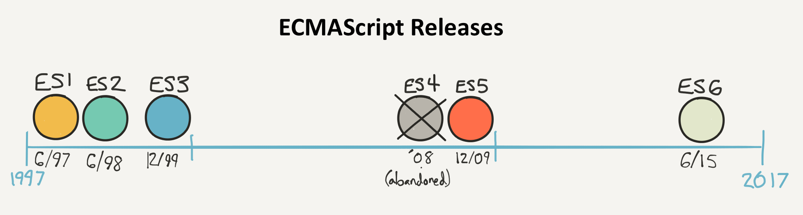
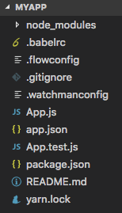

Introduction au développement mobile
Sommaire
- L'écosystème mobile
- Le JavaScript moderne
- Premiers pas avec React Native
L'écosystème mobile
Développement natif
Création d'applications en utilisant la technologie prévue par le concepteur de l'OS.
- Android : Java
- iOS : Objective-C ou Swift
Ces technologies sont incompatibles.
Avantages
- Accès à l'intégralité des fonctionnalités matérielles et logicielles du terminal mobile.
- Performances optimales.
Inconvénient
Nécessité de créer puis de faire évoluer une application pour chaque environnement.
Solutions hybrides
Création d'applications mobiles compatibles avec plusieurs OS mobiles grâce à un framework dédié.
Une application hybride est une application web qui s'exécute à l'intérieur d'un navigateur.
Exemples : Apache Cordova, Ionic
Avantages
- Fonctionnalités et performances proches de celles d'une application native.
- Economies de ressources pour créer l'application.
- Une seule base de code : maintenance et évolution facilitées.
Inconvénients
- Impossible d'accéder à certaines fonctionnalités matérielles ou logicielles spécifiques.
- Look'n'feel d'une application web.
- Mauvaises performances dans certains scenarii.
Développement natif multi-plateformes
Création d'applications mobiles compatibles avec plusieurs OS mobiles grâce à un framework dédié.
Le framework encapsule les véritables composants natifs de l'OS.
Exemples : React Native, Weex, Xamarin
Le meilleur des deux mondes ?
Combine les avantages du natif (look'n'feel, performances) et de l'hybride (une seule base de code).
Limite potentielle : le support de l'OS dépend entièrement du framework.
Le JavaScript moderne
Un pré-requis essentiel
La grande majorité des solutions mobiles multi-plateformes sont basées sur JavaScript.
Les évolutions du langage
JavaScript est normalisé sous le nom ECMAScript.
La Norme ES2015 (ES6) a apporté de très nombreuses améliorations au langage.
Let et const
Les mots-clés let et const remplacent var pour la déclaration des variables.
La valeur d'une variable déclarée avec const ne peut plus être modifiée.
let a = 3.14;
a = 6.28; // OK
const b = 3.14;
b = 6.28; // Erreur!
Litéraux de modèle
Chaînes de caractères créées entre backticks `...` et permettant d'intégrer des expressions.
const country = "France";
console.log(`I live in ${country}`); // "I live in France"
Fonctions fléchées
Nouvelle syntaxe pour créer des fonctions anonymes.
// Syntaxe classique
const hello = function(name) {
const message = `Hello, ${name}!`;
return message;
};
// Utilisation d'une fonction fléchée
const hello = (name) => {
const message = `Hello, ${name}!`;
return message;
};
console.log(hello("Richard")); // "Bonjour, Richard!"
Classes
class Character {
constructor(name, health, strength) {
this.name = name;
this.health = health;
this.strength = strength;
}
describe() {
return `${this.name} has ${this.health} health points
and ${this.strength} as strength`;
}
}
const aurora = new Character("Aurora", 150, 25);
console.log(aurora.describe());
Appels asynchrones
Une promesse ou promise est un objet qui encapsule une opération dont le résultat n'est pas encore connu.
// Envoie une requête HTTP asynchrone vers l'URL spécifiée
fetch(url)
.then(() => {
// Code appelé ultérieurement si la requête réussit
})
.catch(() => {
// Code appelé ultérieurement si la requête échoue
});
Consommation d'API web
// Envoi d'une requête HTTP asynchrone vers l'URL spécifiée
// La réponse est reçue sous forme de données JSON
fetch("http://my-api-url")
.then(response => response.json()) // JSON vers JavaScript
.then(content => {
// Utilisation de la réponse
// ...
})
.catch(err => {
console.error(err.message);
});
Modules et imports
JavaScript supporte la notion de module pour factoriser des éléments réutilisables.
// Importe l'élément exporté par défaut par le module
import React from 'react-native';
// Importe d'autres éléments exportés grâce à leur nom
import {View, Text, Image} from 'react-native';
// Importe à la fois l'élément par défaut et d'autres éléments
import React, {View, Text, Image} from 'react-native';
Ressources
Les outils
- Gestion des dépendances : npm ou yarn.
- Edition du code : Visual Studio Code.
- Formatage du code : Prettier.
- Analyse du code : ESLint.
Premiers pas avec React Native
React Native
Framework créé par Facebook, open source depuis 2015.
Déclinaison mobile du framework JavaScript React.

Création d'une application
Utilisation de l'outil Create React Native App associé à l'application mobile Expo.
# Avec npm
npm install -g create-react-native-app
create-react-native-app MyApp
cd MyApp
npm start
# Avec yarn (https://yarnpkg.com/blog/2017/05/12/introducing-yarn/)
yarn create react-native-app MyApp
cd MyApp
yarn start
Structure de l'application
Fichier principal : App.js
import React from 'react';
import { StyleSheet, Text, View } from 'react-native';
export default class App extends React.Component {
render() {
return (
Hello World!
);
}
}
const styles = StyleSheet.create({
container: {
flex: 1,
backgroundColor: '#fff',
alignItems: 'center',
justifyContent: 'center',
},
});
La notion de composant
Les composants sont les blocs de base d'une application React (Native).
Ils permettent de créer une UI sous forme déclarative par assemblage de composants.
Propriétés d'un composant
Caractéristiques définies au moment de sa création et immuables ensuite (immutables).
class Greeting extends Component {
render() {
return (
Hello {this.props.name}!
);
}
}
export default class LotsOfGreetings extends Component {
render() {
return (
);
}
}
Etat d'un composant
Etat interne (données) d'un composant, susceptible de changer au cours du temps (mutable).
class Counter extends Component {
constructor(props) {
super(props);
this.state = {count: 0};
setInterval(() => {
this.setState({count: this.state.count + 1})
}, 1000);
}
render() {
const {count} = this.state;
const {color, size} = this.props;
return (
{count}
)
}
}
export default class CounterApp extends Component {
render() {
return (
);
}
}